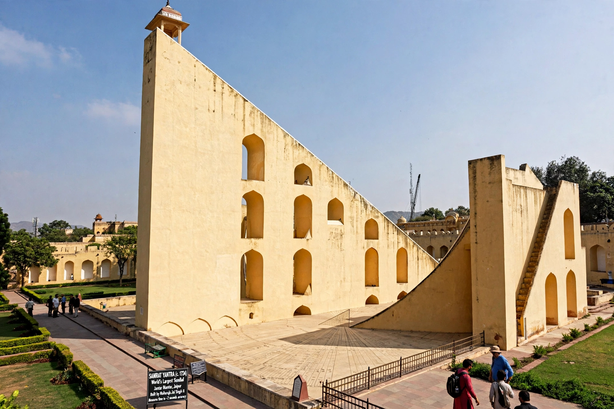

Jantar Mantar, Jaipur
From Wikipedia, the free encyclopedia

The Jantar Mantar is a collection of nineteen astronomical instruments in Jaipur, India, built by the Rajput king Sawai Jai Singh II and completed in 1734. It features the world's largest stone sundial, the Samrat Yantra, whose 27-metre gnomon casts a shadow moving visibly at about a millimetre per second, telling local time to an accuracy of about two seconds. A UNESCO World Heritage Site since 2010, it is the largest and best preserved of Jai Singh's five observatories (the others stand in Delhi, Varanasi, Ujjain and Mathura).
The instruments
Built in masonry at monumental scale to eliminate the reading errors of small brass instruments, the yantras measure time, predict eclipses, track stars' positions, determine declinations and find the solstices. The Jai Prakash — two hemispherical bowls mapping the sky in inversion — was Jai Singh's own invention, and the complex worked alongside, not instead of, brass instruments and telescopic data sent from Europe.
Context
Jai Singh, astronomer-king and founder of Jaipur, corresponded with Jesuit astronomers and sponsored translations of Ptolemy and Ulugh Beg; his observatories were at once scientific instruments and imperial theatre, and remain working demonstrations of naked-eye astronomy's zenith.